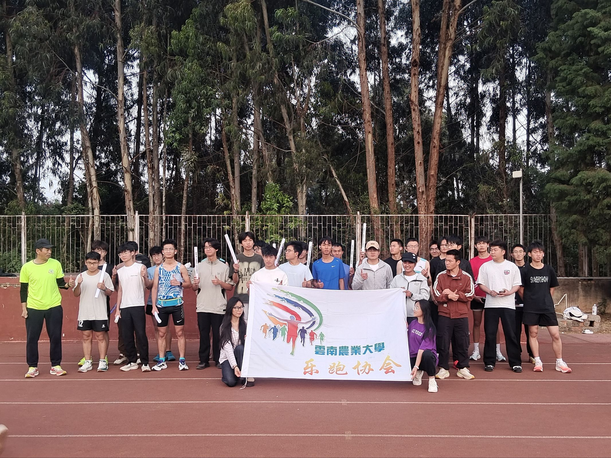
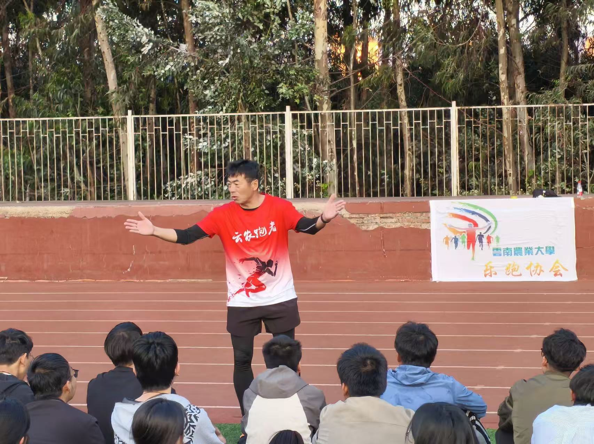
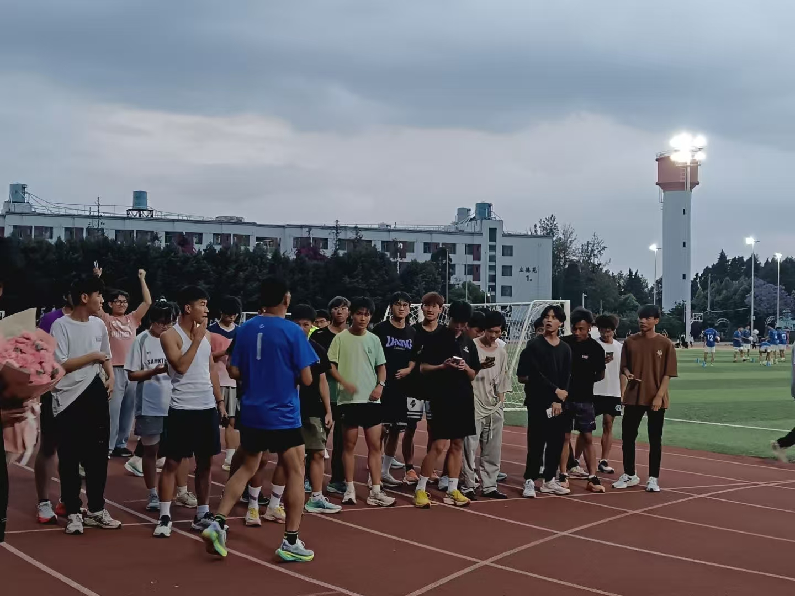
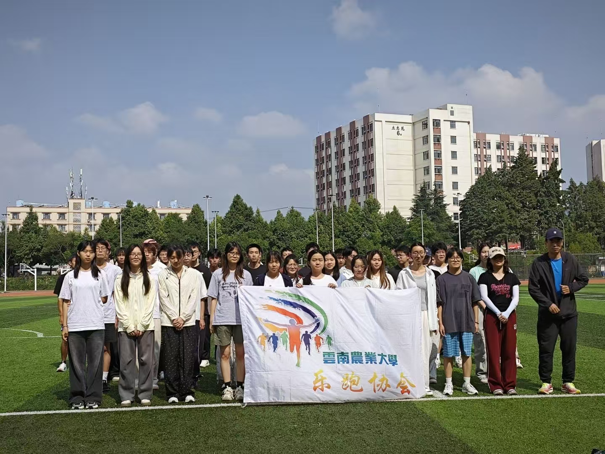
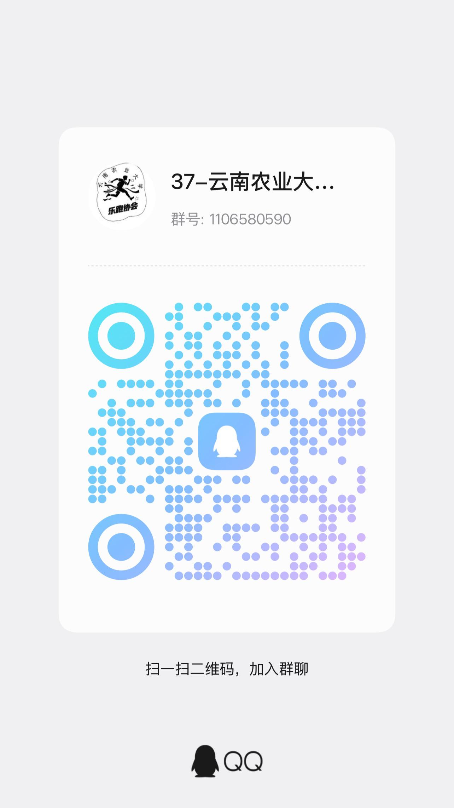

后勤部
统筹物资采购、场地布置、物料管理，保障各类社团活动顺利开展。
保障护航
我们是谁
本社团成立于2016年，以"凝聚同好、精进兴趣、实践成长"为宗旨，长期开展日常训练、主题交流、成果展示等活动。
近年来，社团围绕能力培养持续推进品牌建设，搭建学习实践平台，形成互助共进、知行合一的发展特色。社团稳定吸纳在校爱好者，注重培养成员协作能力与专业素养。
未来，社团将持续创新活动形式，拓展对外交流渠道，打造积极包容的兴趣阵地，为广大同学提供展示自我、共同进步的平台。
组织架构
统筹物资采购、场地布置、物料管理，保障各类社团活动顺利开展。
保障护航对接校内外组织，洽谈合作，拓展活动资源，承担社团对外沟通联络工作。
对外联络组织日常训练，筛选参赛人员，筹备各级赛事，制定系统化备赛方案。
赛事核心策划活动方案，统筹活动全流程，负责人员组织、现场秩序维护。
活动统筹制作宣传物料，运营社团新媒体，记录活动瞬间，对外展示社团形象。
形象传播活动剪影
从迷你马拉松到荧光夜跑，从训练营到农耕越野赛。
十张影像，记录乐跑人的奔跑日常。
品牌项目

01本次活动以普及马拉松赛事知识、规范赛事运作流程、推广科学跑步理念为核心。参与对象为全校师生，活动亮点是让参与者沉浸式掌握赛事组织专业知识，为后续系列赛事的顺利开展打下基础。
赛事推广 · 科学跑步 · 全校师生
02为适配不同基础学子的跑步需求，解决学生跑步不科学、体能提升慢、运动畏难等问题，协会实施分层思政引导，实现因材施教、精准育人，让每一位参与者都能找到适合自己的训练节奏。
分层训练 · 因材施教 · 精准育人活动以趣味运动为载体开展隐性思政教育，鼓励学子将运动中收获的活力与韧劲转化为学习奋进的动力，彰显新时代青年的青春担当。荧光点缀夜色，奔跑点亮初心。
趣味运动 · 隐性思政 · 青春担当
04赛事以接力竞技为载体，重点培育青年学子的团队协作能力与拼搏进取精神，参与对象为全体师生。活动亮点是营造了健康向上、活力满满的校园体育氛围，让接力棒传递的不只是速度，更是团结。
接力竞技 · 团队协作 · 拼搏进取本次赛事是协会"一社一品"项目的核心特色活动，创新融合长跑竞技与农耕体验，立足学校耕读办学特色，打造专属云农的特色体育赛事，极大调动了师生参与积极性，让体育精神与农耕文化同频共振。
一社一品 · 农耕越野 · 云农特色